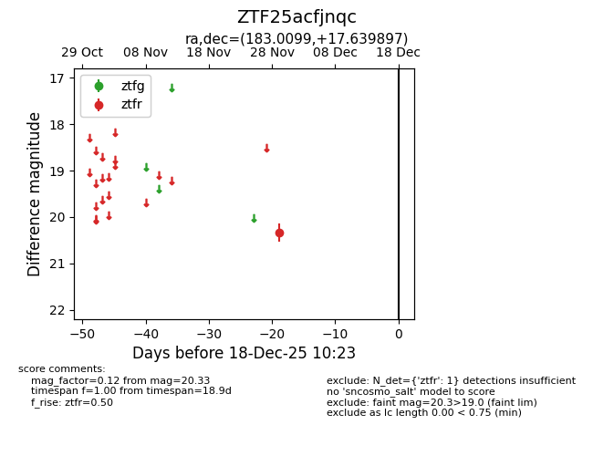
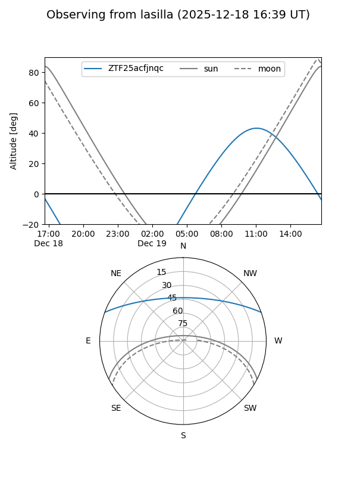
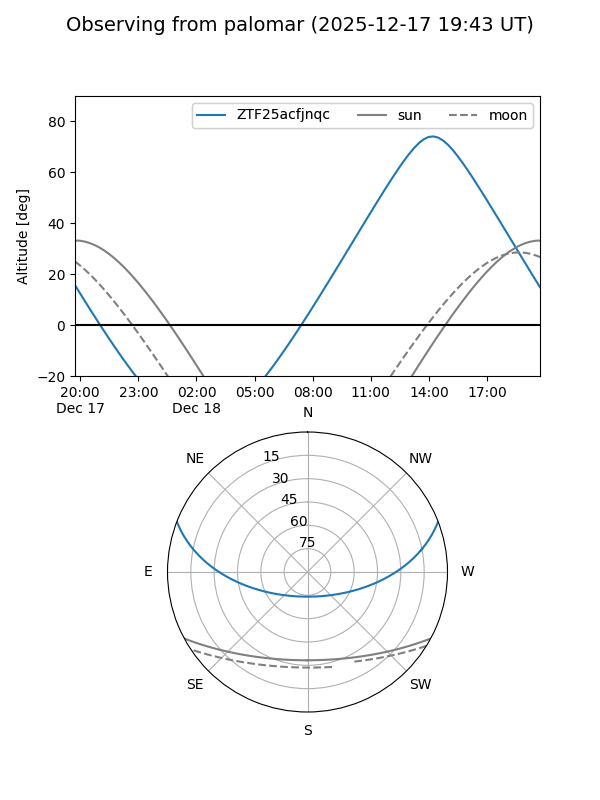

ZTF25acfjnqc
Target ZTF25acfjnqc at 2025-12-18 11:17
Aliases and brokers:
FINK: fink-portal.org/ZTF25acfjnqc
Lasair: lasair-ztf.lsst.ac.uk/objects/ZTF25acfjnqc
ALeRCE: alerce.online/object/ZTF25acfjnqc
alt names
ZTF25acfjnqc (ztf,fink_ztf)
Coordinates:
equatorial (ra, dec) = 183.0099,+17.63990
equatorial (HMS+DMS) = 12:12:02.37,+17:38:23.63
galactic (l, b) = (257.1161,+76.86004)
Photometry
last ztfr=20.33
1 ztfr detections
Lightcurve

Visibility


Additional plots